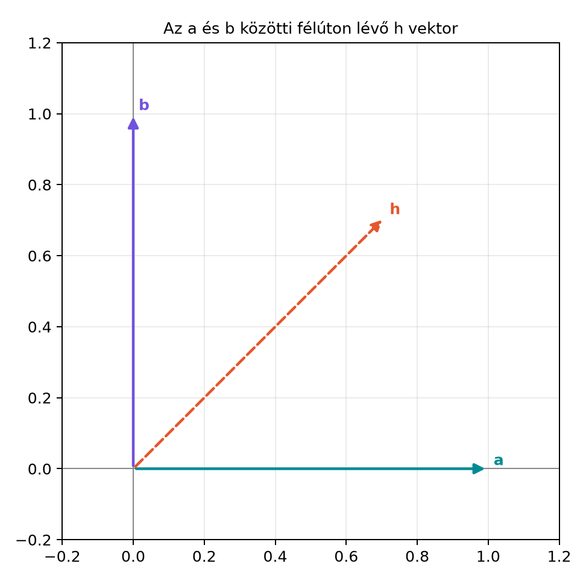

A grafikában, a robotikában és a játékfejlesztésben gyakran felmerül
a kérdés: adott két irányvektor, például egy drón jelenlegi orra és a
kívánt célirány. Mi az a legkisebb szögű forgatás, amely az első vektort
a másodikba viszi? Mátrixokkal ez nehézkes: tengelyt és szöget kell
keresni, majd mátrixot építeni. A geometriai algebra rotora erre
egyetlen zárt képletet ad: ha
és
egységvektorok, és
,
akkor a keresett rotor
Ebben az alfejezetben ezt a képletet vezetjük le, megvizsgáljuk az
elfajult esetet, és Pythonban is megvalósítjuk.
13.2.2 Szemléletes kép: a félúton
lévő vektor
Legyen
és
két egységvektor, például
és
.
A köztük félúton lévő egységvektor:
Az alábbi ábrán
a szögfelező irányába mutat.

Az a és b közötti félúton lévő h vektor -
a = e1, b = e2, h = (e1+e2)/√2; a h-ra tükrözés a-t b-be
viszi.
A kulcsötlet: ha a
egyenesére tükrözünk, akkor a
-val
szimmetrikus
és
egymásba mennek át:
.
Ezt a tükrözést azonban nem közvetlenül használjuk, hanem egy második
tükrözéssel forgatássá alakítjuk.
13.2.3 A rotor levezetése
Legyen
és
egységvektor,
.
Definiáljuk a félúton lévő egységvektort:
Mivel
a szögfelező, a
-ra
való tükrözés
-t
-be
viszi:
Most vegyük a következő szendvicsszorzatot:
Itt felhasználtuk, hogy
,
mert vektorok reverziója önmaga. Az eredmény azt mutatja, hogy az
elem
-t
-be
forgatja. Megmutatjuk, hogy
valóban rotor. Egyrészt
tehát
egységnormájú. Másrészt
ami skalár és bivektor összege, tehát páros fokszámú. Így
rotor.
Helyettesítsük be
definícióját:
Mivel
,
a nevező:
Ezzel megkaptuk a zárt képletet:
13.2.4 Állítás és bizonyítás
Tétel. Legyenek
és
egységvektorok,
.
Ekkor az
mennyiség rotor, és a legkisebb szögű forgatást adja, amelyre
Bizonyítás. A fenti levezetésben láttuk, hogy
,
ahol
.
A
-ra
való tükrözés
-t
-be
viszi, mert
a szögfelező. A
szendvicsszorzat két tükrözést hajt végre: először
-ra,
majd
-re.
Az első tükrözés
-t
-be
viszi, a második
-t
önmagába. A két tükrözés szöge a
és
közötti szög kétszerese, ami éppen az
és
közötti szög, tehát a legkisebb forgatási szög. A normáltságot az
egyenlettel igazoltuk. ∎
Itt
és
,
tehát az összeg
.
A
-szeres
szorzóval
-t
kapunk, ahogy vártuk.
13.2.6 Elfajult eset:
Ha a két vektor ellentétes, akkor
,
a nevező nulla, és a képlet nem működik. Ilyenkor nincs egyértelmű
legkisebb forgatás: bármelyik, az
-ra
merőleges tengely körüli
-os
forgatás
-t
-ba
viszi.
A rotor felírásához válasszunk egy tetszőleges,
-ra
merőleges egységvektort
.
Ekkor a forgatás síkja
,
és mivel a szög
,
a rotor
Mivel
,
,
tehát
Ellenőrzésképpen számoljuk ki a szendvicsszorzatot:
Mivel
(merőleges vektorok antikommutálnak), a középső rész
.
Így a teljes kifejezés
?
Várjunk, részletesebben:
.
A
,
mert
reverziója
(a negatív előjel megmarad?
,
?
Igen, a skalár -1 reverziója önmaga, és
.
Tehát
?
Álljunk meg: ha
,
akkor
.
Mivel
,
ez
.
Tehát
.
Így
Itt felhasználtuk, hogy
és
.
Az eredmény valóban
.
A Python-megvalósításban ezt az esetet külön kezeljük egy tetszőleges
merőleges segédvektor választásával.
13.2.7 Két vektorpár illesztése
(szemléletes ötlet)
Tegyük fel, hogy két vektorpárt adunk meg:
és
.
Olyan rotort keresünk, amelyre
Az első feltételt a fenti képlettel azonnal teljesíthetjük:
Ezután forgassuk el
-t
-gyel:
.
Ha az eredeti vektorpárok konzisztensek, akkor
és
ugyanakkora szöget zár be
-gyel,
mint
az
-gyel.
Ekkor létezik egy
forgatás, amely
-et
fixen hagyja, és
-t
-be
viszi. Ez
egy
körüli forgatás, amelyet a
-re
merőleges síkban lévő vetületekből számolhatunk. A teljes rotor
.
Ez a kétvektoros illesztés az alapja a robotikában használt
orientáció-becsléseknek; a sok pontra vonatkozó optimális illesztés
(Kabsch/Wahba-probléma) már ezen az ötleten nyugszik, de túlmutat ezen a
szinten.
13.2.8 Python-ellenőrzés
A ga3 mini könyvtárra építve valósítsuk meg a
rotor_between(a, b) függvényt. A függvény normalizálja a
bemeneteket, kezeli az ellentétes esetet, és visszaadja a rotort.
import mathfrom ga3 import MV3, vec3def rotor_between(a, b):"""Az a vektort b-be vivő legkisebb szögű forgatás rotora."""# 1. Normalizálás, mert a képlet egységvektorokra érvényes a = a * (1.0/ a.norm()) b = b * (1.0/ b.norm())# 2. Ellentétes vektorok: a képlet nevezője nullaif (a | b) <-0.999999:# Válasszunk egy a-ra merőleges segédvektortifabs(a.e1) <0.9: n = vec3(1.0, 0.0, 0.0) - a * a.e1else: n = vec3(0.0, 1.0, 0.0) - a * a.e2 n = n * (1.0/ n.norm())# 180°-os forgatás az a∧n síkban: R = -a∧nreturn- (a ^ n)# 3. Általános eset: R = (1 + ba)/sqrt(2(1 + a·b)) denom = math.sqrt(2.0* (1.0+ (a | b)))return (MV3(s=1.0) + b * a) * (1.0/ denom)# Teszt: 90°-os forgatás e1-ből e2-bea = vec3(1.0, 0.0, 0.0)b = vec3(0.0, 1.0, 0.0)R = rotor_between(a, b)print("R =", R)print("R a R̃ =", R * a * R.reverse())# Teszt: ellentétes vektorokc = vec3(1.0, 0.0, 0.0)R2 = rotor_between(c, -c)print("Ellentétes eset: R2 c R̃2 =", R2 * c * R2.reverse())
A várt kimenet (4 tizedesre kerekítve):
R = 0.7071 - 0.7071 e12
R a R̃ = 1.0 e2
Ellentétes eset: R2 c R̃2 = -1.0 e1
13.2.9 Tipikus hibák és
félreértések
A szorzat sorrendje. A képletben
szerepel, nem
.
Ha valaki felcseréli, akkor az
-t
felé forgató rotort kap, mert a geometriai szorzat nem kommutatív.
Például
,
esetén
,
míg
.
A nevező elhagyása. Az
mennyiség önmagában nem rotor, mert normája nem
.
A nevezővel való osztás biztosítja, hogy
teljesüljön. Enélkül a szendvicsszorzat nyújtva forgatná a
vektort.
Az ellentétes eset figyelmen kívül hagyása. Ha
,
a nevező nulla, és a képlet nullával oszt. Ilyenkor a megoldás nem
egyértelmű, ezért külön kódágat kell írni.
Nem egységvektorok. A képlet csak
egységvektorokra érvényes. Ha
vagy
nem egységnyi hosszú, először normalizálni kell őket.
13.2.10 Feladatok
13.2.10.1 (a) Fogalmi kérdés
Miért van szükség a nevezőre a zárt képletben? Mi történne, ha
lenne?
13.2.10.2 (b) Kézi számolás
Legyen
és
.
Számítsd ki a rotort, és ellenőrizd, hogy
.
13.2.10.3 (c) Bizonyítási
feladat
Bizonyítsd be, hogy ha
és
egységvektorok,
,
és
,
akkor
Útmutatás: használd fel a vektor-bivektor szorzás
azonosságát.
13.2.10.4 (d) Alkalmazási /
Python-feladat
Írj egy Python-ellenőrzőt, amely 100 véletlen egységvektorra meghívja
a rotor_between függvényt, és ellenőrzi, hogy a kapott
rotorral való forgatás valóban a célvektort adja. A
véletlenszám-generátort rögzítsd a reprodukálhatóság érdekében.
13.2.11 Megoldások
13.2.11.1 (a)
A nevezőre azért van szükség, hogy
egységnormájú legyen, azaz
teljesüljön. Ha
lenne, akkor a normája általában nem
,
ezért a szendvicsszorzat nem tisztán forgatna, hanem nyújtva forgatna. A
éppen az
normát adja meg.
13.2.11.2 (b)
,
.
Ekkor
,
és
.
A nevező
,
tehát
Ellenőrzés:
Először
.
Mivel
,
ez
.
Ezután:
Itt
és
,
tehát az összeg
.
A
-szeres
szorzóval
-t
kapunk.
13.2.11.3 (c)
Számoljuk ki
-t.
Először is:
A középső tényezőt kifejtve:
Mivel
,
.
Továbbá
Az útmutatás szerint
,
hiszen
és
.
Így
A teljes középső rész:
Végül a nevező
,
tehát
13.2.11.4 (d)
A rögzített magú véletlen teszt:
import numpy as npfrom ga3 import vec3from gyakorlat_rotor import rotor_between # a fenti függvényt tartalmazó modulrng = np.random.default_rng(42)for _ inrange(100): a_vec = rng.normal(size=3) b_vec = rng.normal(size=3) a = vec3(*a_vec) b = vec3(*b_vec) a = a * (1.0/ a.norm()) b = b * (1.0/ b.norm())if (a | b) <-0.999999:continue# ellentétes esetben a forgatás nem egyértelmű R = rotor_between(a, b) res = R * a * R.reverse()assertabs(res.e1 - b.e1) <1e-6assertabs(res.e2 - b.e2) <1e-6assertabs(res.e3 - b.e3) <1e-6print("100 véletlen teszt sikeres")
A kód numpy véletlenszám-generátort használ
ellenőrzésre, a geometriai algebrai műveleteket pedig a saját
MV3 osztály végzi. A kimenet várhatóan
100 véletlen teszt sikeres.
13.2.12 Rövid összefoglaló
Legyen
és
egységvektor,
.
A félúton lévő egységvektor
szögfelező, ezért a
-ra
való tükrözés
-t
-be
viszi. A
rotor két tükrözést fűz össze, így a legkisebb szögű forgatást adja. A
zárt képlet:
A levezetés a geometriai algebra klasszikus, stabil eredményein
alapul; megtalálható például Hestenes, Doran–Lasenby és Macdonald
tankönyveiben. Konkrét oldalszámot vagy fejezetszámot nem ellenőriztünk.
A ga3 mini könyvtár MV3 osztályának pontos
kiírási formátumát és a norm() metódus definícióját a
korábbi alfejezetek rögzítik; más könyvtárak, mint a
clifford vagy a kingdon, eltérő konvenciókat
használhatnak, ezért API-jukat csak ellenőrzéssel szabad átvenni.